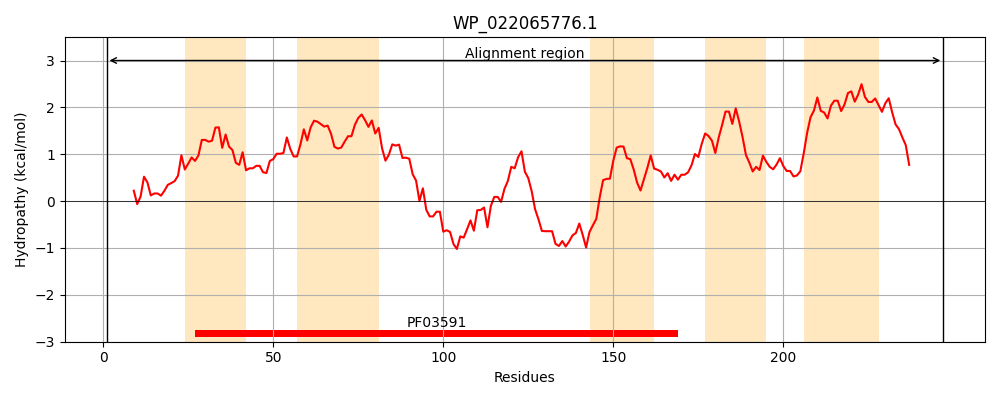
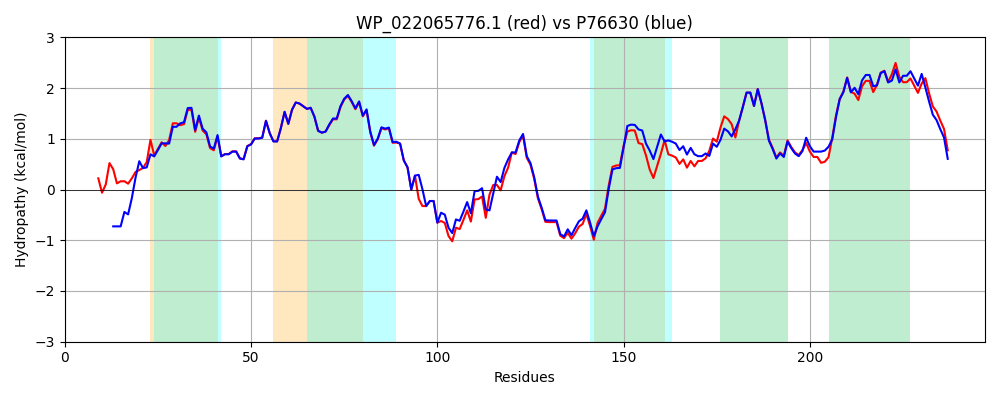

Hit Accession: P76630
Hit TCID: 2.A.78.1.3
Hit Description: gnl|BL_ORD_ID|11480 gnl|TC-DB|P76630|2.A.78.1.3 Inner membrane protein ygaZ - Escherichia coli.
Mach Len: 247
e:0.000000
Query TMS Count : 5
Hit TMS Count: 5
TMS-Overlap Score: 4.550000
Predicted Substrates:CHEBI:6829;methionine
BLAST Alignment:
Score: 1015 , Bit scores: 395 bits, E-value: 2.8e-141, Alignment length: 247, Percentage identity: 81
Query: 1 MENPAPLTCALPERVATVGEGIKDSLPIVISYLPVAFAFGLNATRLGFTPLESVFFSCIIYAGASQFVITAMLAAGSSLWVAALTVMAMDVRHVLYGPSLRSRIRSALDKKKTALWAFGLTDEVFAAATARLVRDNRRWSENWMLGLAFTSWASWVCGTLAGAWSGNGLLVDYPAVEAALGFMLPALFMSFLLASFQRQQSLCVTAALAGALGGILLFSIPAAILAGIVCGCLTALVQAMLKGMPDE 247
ME+P P AT EG KDSLPIVISY+PVAFAFGLNATRLGF+PLESVFFSCIIYAGASQFVITAMLAAGSSLW+AALTVMAMDVRHVLYGPSLRSRI L K KTALWAFGLTDEVFAAATA+LVR+NRRWSENWM+G+AF+SW+SWV GT+ GA+SG+GLL YPAVEAALGFMLPALFMSFLLASFQR+QSLCVTAAL GAL G+ LFSIP AILAGIVCGCLTAL+QA +G PDE
Sbjct: 1 MESPTPQPAP---GSATFMEGCKDSLPIVISYIPVAFAFGLNATRLGFSPLESVFFSCIIYAGASQFVITAMLAAGSSLWIAALTVMAMDVRHVLYGPSLRSRIIQRLQKSKTALWAFGLTDEVFAAATAKLVRNNRRWSENWMIGIAFSSWSSWVFGTVIGAFSGSGLLQGYPAVEAALGFMLPALFMSFLLASFQRKQSLCVTAALVGALAGVTLFSIPVAILAGIVCGCLTALIQAFWQGAPDE 244 | Protein Hydropathy Plots: |
|---|
|  |  |
Pairwise Alignment-Hydropathy Plot:
|
|---|
|  |